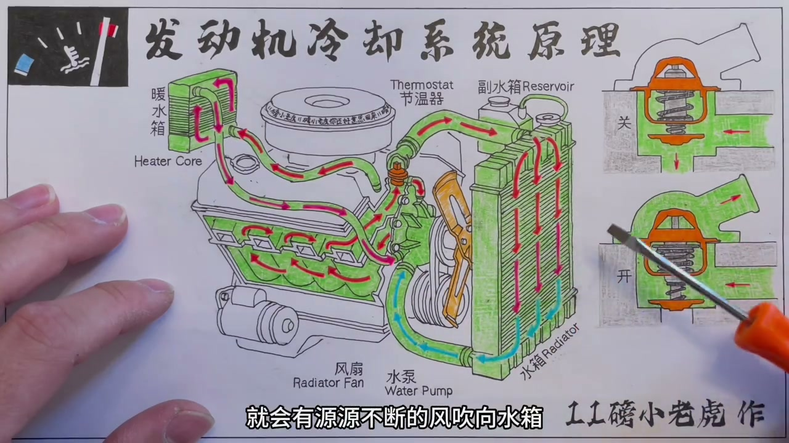
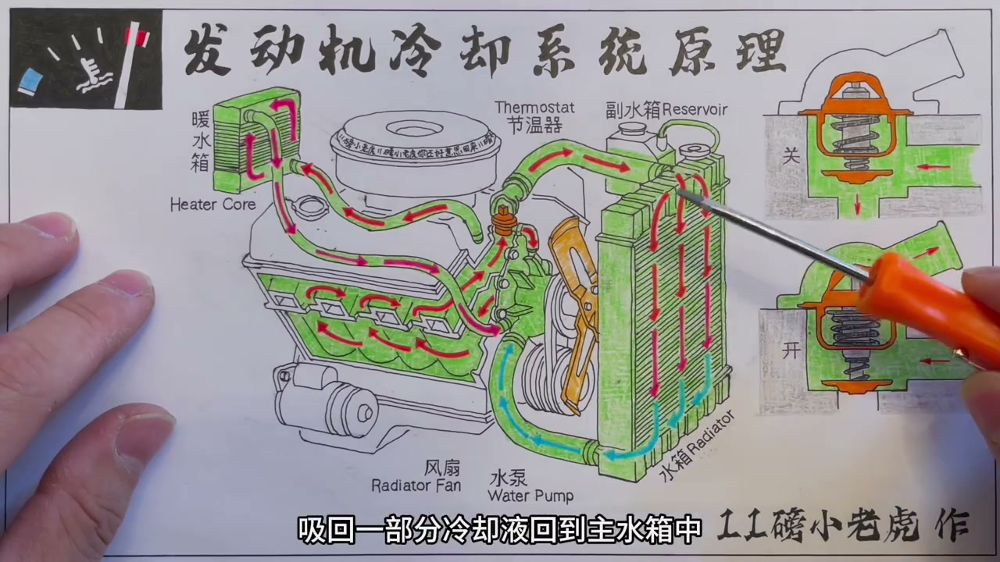
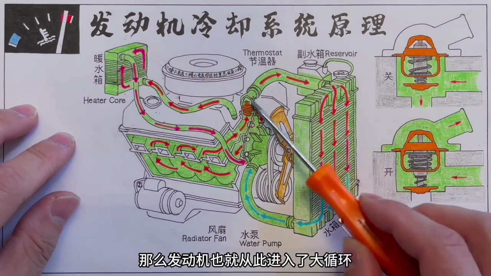
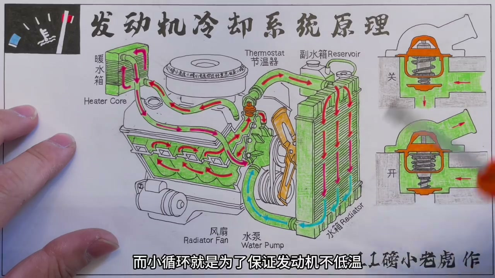
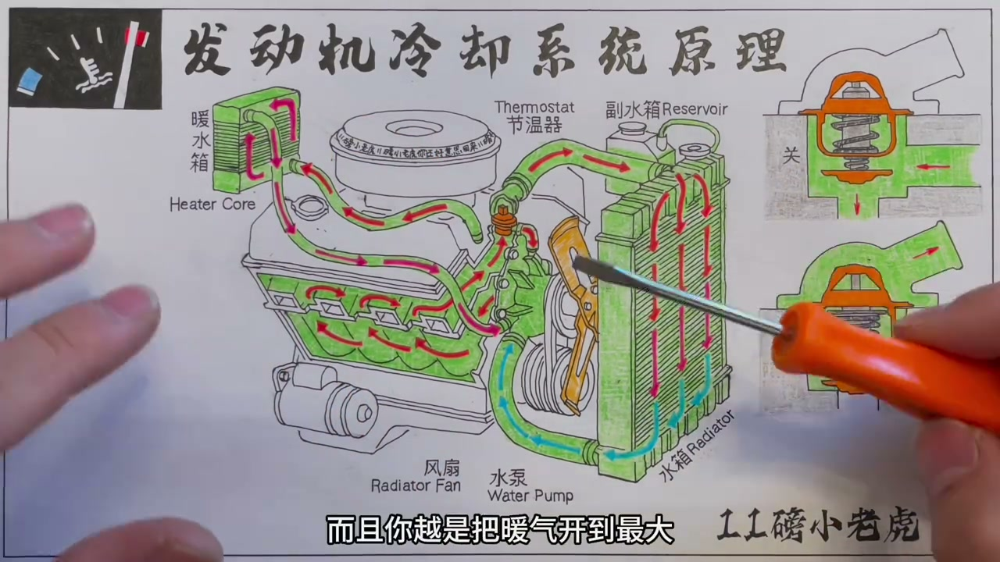

01
中文
今天来聊一聊汽车发动机的冷却系统是怎样运行的。
EN
Today we look at how an engine's cooling system works.
表达提示cooling system（冷却系统）
Scene English · 汽车 · 冷却系统
How the Engine Cooling System Works
🎧 语音讲解
The Main Components
情境冷却系统由水泵、节温器、水箱、风扇、副水箱等构成，水泵是整个循环的动力来源。
今天来聊一聊汽车发动机的冷却系统是怎样运行的。
Today we look at how an engine's cooling system works.
表达提示cooling system（冷却系统）
发动机前端固定的水泵，是冷却系统循环运行的动力来源。
The water pump on the engine front drives the whole cooling loop.
表达提示water pump（水泵）
水泵由发动机曲轴通过皮带带动，一半在发动机内、一半在发动机外。
Belt-driven off the crankshaft, the pump straddles the engine block.
表达提示belt-driven（皮带带动）
cooling system（冷却系统
water pump（水泵

The Radiator and Fan
情境水箱在车头位置，上下两根水管形成循环；堵车没风时，温度传感器命令风扇强制撞风降温。
冷却水箱在车头位置，上下两根粗水管，一根最上、一根最下。
The radiator sits up front with two thick hoses—one top, one bottom.
表达提示radiator（水箱）
滚烫的冷却液从上面进水箱，从下面流回发动机。
Hot coolant enters at the top and returns at the bottom.
表达提示coolant（冷却液）
堵车没风的时候，温度传感器发现冷却液不够低，就命令风扇启动。
In traffic, the temp sensor sees coolant still hot and commands the fan on.
表达提示temp sensor（温度传感器）
风扇强行给水箱制造撞风降温。
The fan forces airflow through the radiator to cool it.
表达提示forced airflow（强制撞风）
radiator（水箱
coolant（冷却液

The Expansion Tank
情境副水箱（膨胀水箱）在冷却液高温膨胀时储存一部分，熄火降温收缩时再吸回，主水箱液位应永远满。
副水箱也叫膨胀水箱，主要功能是引流一部分高温膨胀的冷却液。
The expansion tank stores coolant that swells from high heat.
表达提示expansion tank（膨胀水箱）
发动机熄火冷却液降温收缩时，再从副水箱吸回一部分。
As the engine cools, coolant contracts and is drawn back from the tank.
表达提示contract（收缩）
主水箱液位应该永远都是满的，副水箱液位随温度上下浮动。
The main tank stays full; the expansion tank level floats with temperature.
表达提示float with temperature（随温度浮动）
大家常规检查冷却液液位，看的其实都是副水箱。
That's why routine coolant checks look at the expansion tank.
表达提示routine check（常规检查）
expansion tank（膨胀水箱
contract（收缩

Small Loop and Big Loop
情境冷车启动时节温器关闭，冷却液只在发动机内部小循环快速升温；温度到80多度节温器打开进入大循环。
发动机冷启动时，唯一运行的部分只有水泵，冷却液在内部循环。
At cold start, only the pump runs, circulating coolant internally.
表达提示cold start（冷启动）
这就是所谓的小循环，一点点水很快就烧到80多度。
That's the small loop—a little coolant heats to 80°C fast.
表达提示small loop（小循环）
达到节温器设计的打开温度，冷却液进入水箱，发动机进入大循环。
Past the thermostat's set point, coolant flows through the radiator in the big loop.
表达提示big loop（大循环）
小循环保证发动机不低温，大循环保证发动机不高温。
The small loop prevents cold running; the big loop prevents overheating.
表达提示prevent overheating（防高温）
cold start（冷启动
small loop（小循环

The Heater Core
情境暖风水箱从冷却系统接两根小管子引冷却液走一圈，鼓风机一吹就变成车内暖气。
暖风水箱属于冷却系统的一个挂件，原理很简单。
The heater core is an add-on to the cooling system with a simple idea.
表达提示heater core（暖风水箱）
从冷却系统接两根小管子，把冷却液引过来走一圈。
Two small hoses route hot coolant through it.
表达提示route coolant（引冷却液）
在它前面加一个鼓风机一吹，车内的暖气就是这么来的。
A blower fan over it produces your cabin heat.
表达提示cabin heat（车内暖气）
冬天刚启动车辆时暖气来得慢，因为要先等小循环把冷却液烧热。
Cold mornings have slow heat because the small loop must warm up first.
表达提示slow heat（暖气来得慢）
heater core（暖风水箱
route coolant（引冷却液

Diagnosing Faults
情境水温120度但上水管不烫手，是节温器卡在关闭位置；上水管下水管都烫手，是风扇的问题。
水温表120度，但摸上水管一点也不烫手——故障在节温器。
Temp reads 120°C yet the top hose is cold—the thermostat is stuck closed.
表达提示stuck closed（卡在关闭位）
节温器打不开，发动机保持在小循环，大循环水箱流程走不了就过热。
With the thermostat stuck, only the small loop runs and the engine overheats.
表达提示overheat（过热）
上水管和下水管都很烫手，答案就是风扇的问题。
Both hoses scorching hot points to the cooling fan.
表达提示fan problem（风扇问题）
冬天风扇坏了影响不大，因为外界温度足够低给水箱冷却。
In winter a dead fan matters less—ambient air cools the radiator.
表达提示ambient air（外界空气）
stuck closed（卡在关闭位
overheat（过热
说冷却部件
说大小循环
说节温器
说副水箱
说暖风水箱
说故障诊断
常规检查看副水箱。
冷启动开暖气拖慢热机。
节温器卡死会过热。
冬天风扇坏了影响小。
两个水温传感器别搞混。